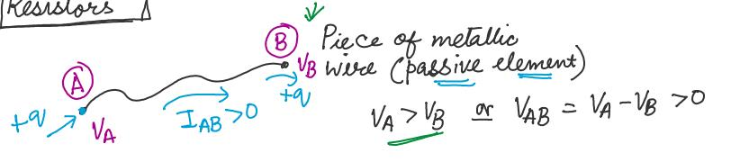
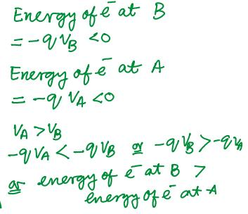
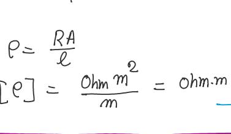
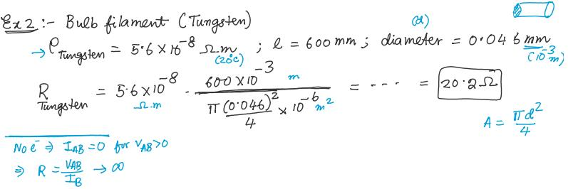
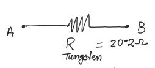
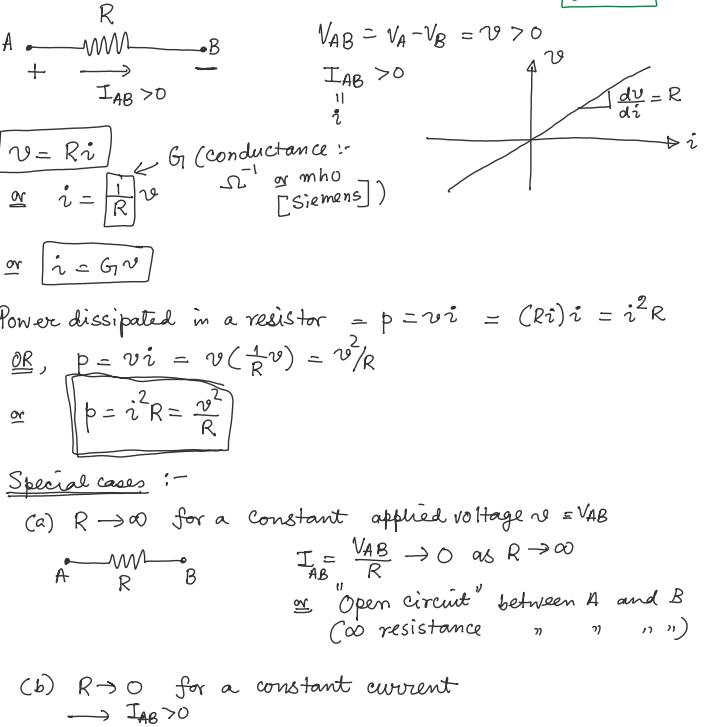
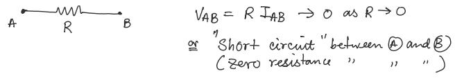
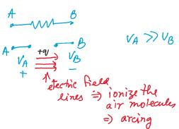

Lecture 3
Passive Elements
Resistors: absorb electrical power and disspate in the form of heat (light bulbs, eletric heates)
Inductors
Capcitors
2 and 3 temporarily store electrical energy
Resistors

What is the relation between and ?
For metallic systems, in general, is proportional to or , which is Ohm's Law
Note: Ohm's Law may not be always valid
constant of propotionality: "Resistance"

Microscopic origin of resistance

- These ions / atoms are not static. They vibrate about their mean position of rest due to thermal energy

As flow inside a metal wire, they lose energy and momentum due to interactions ("collisions") with impurities and the lattice vibrations. This explains the energy loss of the
This lost energy is transferred to the material the material gets hot, which implies
- lattice ions vibrate more
- more collisions with
- higher

R Dependent Factors
R depends on the following factors:
- Material property
- more free electrons less resistance; e.g: metal
- less free electrons more resistance; e.g: plastic or ceramic
- Dimensions of the material
- higher volume more less resistance
- higher volume (adding extra material, also introduce more ions atoms / ions) more collisions higher resistance
- Temperature (T)
- The material gets hot lattice ions vibrate more more collisions with higher R
- as T increases, R increases (metallic systems)

- , resistivity (material properly , function of T (Temperature))
- Resistivity value is obtained from experiment
- length, meter (m)
- cross-section, ()
- , resistivity (material properly , function of T (Temperature))

- Relationship of length, cross-section and resistance

Examples
- Ex 1:

- Ex 2:

Circuit Model of Resistors

Circuit model ignores the details of the wire (material, dimensions - cross areas, distance / length between entrance and exist)
- only mentions the "lumped" or "composite" varibale R (lumped Component Approximation, LCA)
- Resistance is "distributed" over the entire volume of the wire
But in the circuit model, resistance is lumped in the ZigZag region

- Related with voltage, current and power


- As or increase, then increase, then resistor becomes more hot more collisions inside the material higher resistance

- Note: open circuit and arching


Ideal region or operation: linear region (where Ohm's law is valid)
Every resistor comes with a power limit specification () (specified by the mancfactuer)

Example

Mechanical analogy of LCA